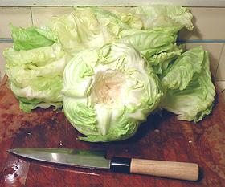
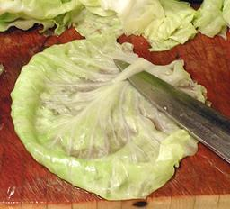
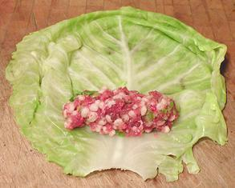
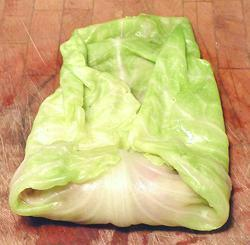

Cored Cabbage,
ready for the boiling water.

Shaving off the thick rib. Better,
drape the leaf over the front of
the board to make the rib easier
to get at.

Stuffing placed on a leaf.

First stage of rolling.

Sides folded in.

Fully rolled.

My Cabbage Tools.